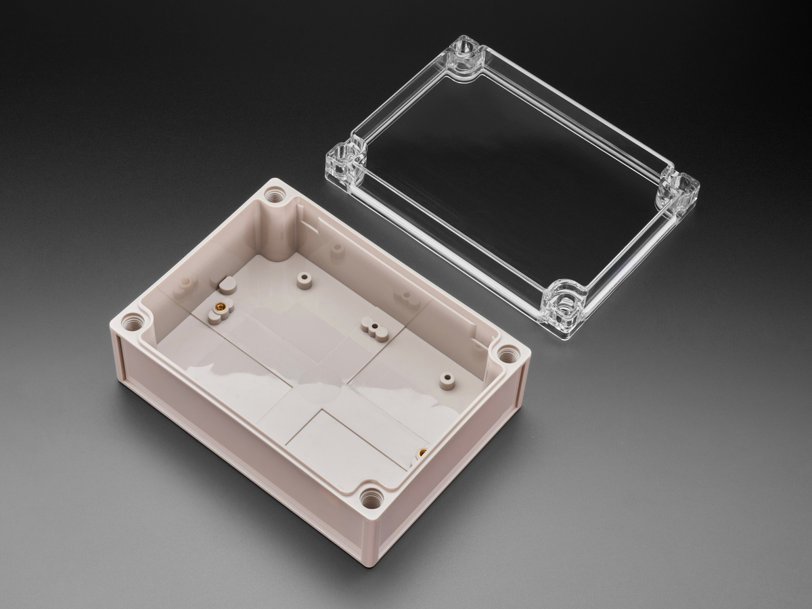

Home / Detection Electronics / Raspberry Pi Listeners
Detection Electronics · Category
Raspberry Pi Listeners
Good · Better · Best Hardware Only or Ready-to-Run on every sit
Receive-only Raspberry Pi sits for Remote ID and ADS-B. Start cheap. Step up when you need a case, a 1090 whip, a filter, or a mast-mount outdoor antenna. Hardware Only is the kit as the shop ships it. Ready-to-Run is the same hardware — we load the listener image on a 64GB card before it ships. The $299 feeder is a different job: 1090 and 978, no Remote ID board.
Sold by Dark Sky Systems LLC. Detection only. Receive only. Ready-to-Run ships from us after we load it. Weekend +1 day.